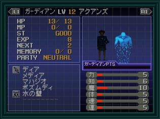

주인공이나 파트너가 사망하면 「가디언」으로 불리는 악마가 빙의합니다.
- 주인공이 죽었을 경우는 현재 있는 지역의 처음에 되돌려집니다.
- 파트너가 사망했을 경우는 전투후에 그 자리에서 부활합니다.
- 가디언이 빙의하면 주인공의 경우는 파라미터가 변화합니다.
- 파트너의 경우는 파라미터의 변화와 가디언이 가지는 마법을 계승할 수 있습니다.
- 파트너는 기억하는 마법이 한계가 있으므로 잘 생각하면서 가디언을 갱신합시다.
재차 사망했을 때 가디언이 변경됩니다. 가디언 포인트에 의해서 다음 빙의될 가디언의 랭크가 정해집니다.
- 가디언 포인트는 적을 넘어뜨렸을 때에 쌓입니다.
- 현재 빙의된 가디언보다 레벨이 높은 적을 쓰러뜨린다면 많은 포인트가 모입니다.
- 반대로 레벨이 낮은 적을 쓰러뜨리면 적은 포인트 밖에 모이지 않습니다.
- 가디언 게이지가 노란색인 경우 1랭크 아래의 가디언이
- 붉은색의 경우 현재보다 상위의 가디언이 빙의됩니다.